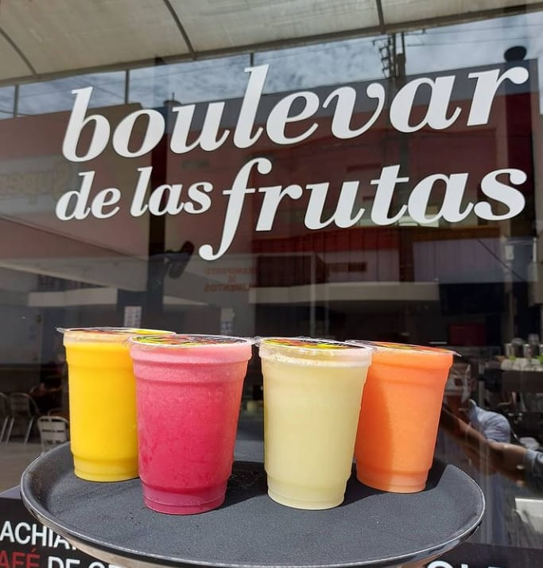

RESTAURANT "BULEVAR DE LAS FRUTAS"
Comer saludable es importante en nuestra vida ya que nos ayuda a prevenir enfermedades.Podemos comer grasa pero no exageradamnete por que estraiamos mala acostumbrando nuestro cuerpo, nos enfermariamos con más frecuencia.
Mezclar el deporte con alimentos saludable estariamos dando el mejor cuidadoa nuestro cuerpo y metabolismo,una alimentación saludable no es aquella que excluye ciertos grupos nutricionales ya que todos, en mayor o menor medida son necesario para nuestro organismo.
en la amazonia ecuatorina existen diferentes alimentos saludables como son:
1) GUAYUSA: la guayusa nos ayuda adar energia duarante todo el día , evita el envejecimiento prematuro, puede ayudar en la salud cardiovascular, a regular el peso y la hipertensión, además pone a funcionar la circulación sanguínea. tiene muchas vitaminas importantes como la C y D.
2) YUCA: La yuca es un alimento energético que aporta vaitamina K , ayuda a mantener sanos los huesos también contine hierro el cual ayuda a evitar la anemia.
3) PAPAYA: La papaya contiene una enzima llamada papaína que ayuda a la digestión; de hecho se puede utilizar como ablandador de carne. Además, tiene un alto contenido de fibra y agua, que ayudan a prevenir el estreñimiento y promueven la regularidad y la salud del tracto digestivo.
4) PITAHAYA: Esta fruta ayuda a desinflamar el organismo combatiendo tanto la retención de líquidos como la presión arterial,Es rica en minerales como hierro, calcio, fósforo y vitaminas B, C y E, ayudando a combatir enfermedades como anemia y osteoporosis.
5) CAFE: Es una de las pocas sustancias naturales que ayudan a la quema de grasas.a cafeína aumenta los niveles de adrenalina; Esta hormona prepara a nuestro cuerpo para un esfuerzo físico excepcional, ya que el cafe tine muchos nutrientes esenciales para nuestro organismo.

Obten los mejores batidos saludables en el "BULEVAR DE LAS FRUTAS"